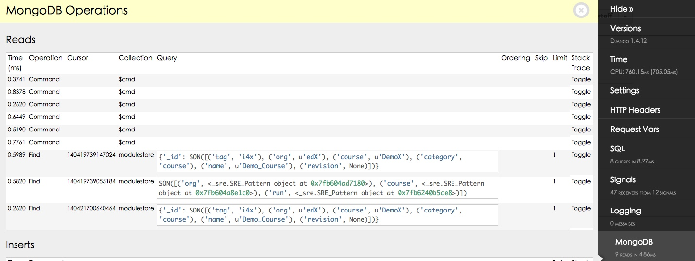
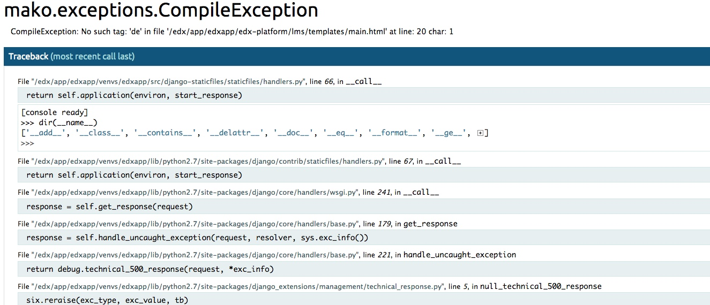
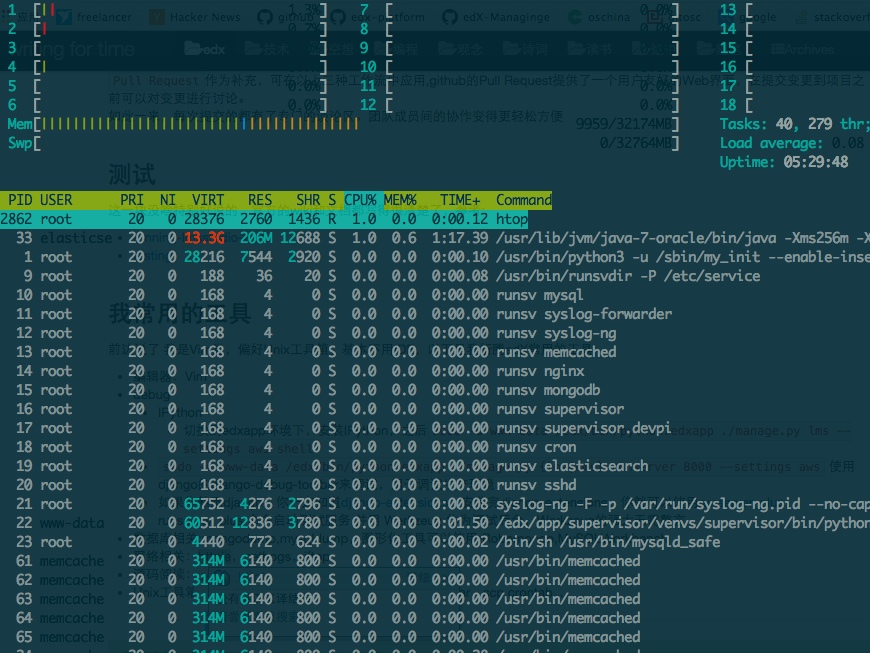

北京时间，公元2015年7月3号7点49分，我一边舔着酸奶盖，一边在国内服务器上拉取下午发布到docker hub上的wwj718/edx-lite:birch-1镜像，在不需要vpn的情况下依然可行 :)
那么第一版的发布工作就宣告完成啦.欢迎大家试用与反馈(我的邮箱 : wuwenjie718@gmail.com)
以“北京时间xxx”开头感觉好装X，有木有！
谢谢你们没有朝我扔白菜鸡蛋
基础工作归功于appsembler,我的版本基于他们此前的工作, 那么给人家打个广告也是应该的，appsembler这样介绍自己
Appsembler has worked with both corporations and institutions of higher education to help them successfully implement their online learning initiatives with the Open edX™ platform.
公司位于英国剑桥
他们热衷于开源，积极回馈社区，良心企业简直是，此前我给他们写过一封邮件，询问何时发布birch版本，他们很热心回了邮件，说近来忙碌，暂时没有时间发布，因为发布前有不少清理工作，所以我自行开始这项工作。此后准备持续推进这个版本，也欢迎国内用户给与反馈，如果国内社区成形，此后将交由社区维护
特性
- 开箱可用fullstack
- 增强开发环境
- 给出一些常见定制开发的案例和脚手架：主题，xblock 等
- 将参数设置得适合国内使用
使用
Quick Start
安装docker(我用的是docker1.7)
国内用户优先考虑使用：curl -sSL https://get.daocloud.io/docker | sh,如果你这样做，就不必看官方推荐做法了，直接跳到国内加速部分
官方推荐做法
- ubuntu12.04:
sudo apt-get install linux-image-generic-lts-trusty,sudo reboot,curl -sSL https://get.docker.com/ | sh - ubuntu14.04:
curl -sSL https://get.docker.com/ | sh - Mac:boot2docker osx-installer
- Windows:boot2docker windows-installer
其他操作系统可参考:docker installation
国内加速
https://dashboard.daocloud.io/mirror
echo "DOCKER_OPTS=\"\$DOCKER_OPTS --registry-mirror=http://your-id.m.daocloud.io\"" | sudo tee -a /etc/default/dockersudo service docker restart
注意为了获得your-id，你需要注册https://dashboard.daocloud.io/mirror
拉取镜像
sudo docker pull wwj718/edx-lite:birch-1
run it
sudo docker run -itd -p 8001:80 -p 8002:18010 wwj718/edx-lite:birch-1
ok！好啦！就这么简单，打开<ip>:8001就可以看到lms，<ip>:8002对应cms
wwj718/edx-lite:birch-1特性
Done
- 可以同时作为devstack和fullstack
- devstack加入了mongo调试面板
- devstack加入了django-extensions，可以极大地方便django的开发调试工作，包括debug神器Werkzeug都默认装好了
- 简单优化了系统环境：中文支持，性能查看工具，编辑环境
- 推荐使用sudo账号(edxcn:edxcn),默认的shell是fish
Todo
- 汉化
- theme
将其作为开发环境(devstack)
why docker
- 轻量化，docker比virtualbox要节约内存得多，跑edx的速度也快得多
- 协作变得容易，团队成员之间的协作开发模式，变得与git相似，环境和开发成果的同步变得容易
- 开发成果很容易直接部署到生产环境，几乎就是一键式的
可以参考我的这篇文章:edx推广，国内社区与docker
use it
sudo docker run -itd -p 8001:80 -p 8002:18010 -p 8005:5000 -p 8022:22 wwj718/edx-lite:birch-1
sudo docker ps #获取<container_id>
sudo docker exec -it <container_id> bash #进入到容器里
sudo -u www-data /edx/bin/python.edxapp /edx/app/edxapp/edx-platform/manage.py lms runserver 0.0.0.0:5000 --settings devstack #开发状态
sudo -u www-data /edx/bin/python.edxapp /edx/app/edxapp/edx-platform/manage.py lms runserver_plus 0.0.0.0:5000 --settings devstack #增强调试功能
sudo -u www-data /edx/bin/python.edxapp /edx/app/edxapp/edx-platform/manage.py lms show_urls --settings devstack #show_urls
#更过增强功能可以参考[django-extensions](https://github.com/django-extensions/django-extensions)
#做相应的定制开发
#保存提交定制开发的成果，可以类比git commit
docker commit -a "Author" -m "commit message" <container_id> [REPOSITORY[:TAG]]
#push，可以类比git push
docker push [REPOSITORY[:TAG]]
push 之后，团队成员就可以通过docker pull [REPOSITORY[:TAG]]来共享你的工作成果了
代码用git管理，尽量减少docker commit
当前状态
当前的版本主要功能是为开发准备的，秀一下效果： 


将其作为生产环境(fullstack)
性能高于虚拟机，与在实体机上部署相当
默认情况下，该镜像run起来后，80，18010端口对应lms，cms
如果需要用作fullstack，需要使用docker -v挂载数据卷，防止数据丢失
当前版本未做充足测试，只推荐小规模测试使用。
挂载数据卷
#首先要把数据库的数据复制到宿主机器
##在容器内
/etc/init.d/mysql stop
/etc/init.d/mongodb stop
cp /var/lib/mysql /tmp -r
cp /var/lib/mongodb /tmp -r
chmod -R 777 /tmp
##在宿主机
scp -P 18022 -rp edxcn@127.0.0.1:/tmp/mongodb /opt/mongodb
scp -P 18022 -rp edxcn@127.0.0.1:/tmp/mysql /opt/mysql
sudo docker run -itd -v /opt/mysql:/var/lib/mysql -v /opt/mongodb:/var/lib/mongodb -p 8001:80 -p 8002:18010 -p 8005:5000 -p 18022:22 wwj718/edx-lite:birch
以上方式并不好，最好的在build的时候就处理好数据卷的问题
如果不挂载数据卷的话，每次docker commit 数据都会被提交，造成image很大